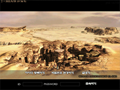
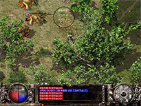

项目背景
2001年，《热血传奇》风靡大江南北。
同年，韩国WEMADE开发了续作，被称为《传奇ei2.0》。
ei 为 The evil's illusion 的缩写，中文名「恶魔的幻影」，次年在全球公测。
2002年，我和小伙伴们坐在网吧，望着韩文字符通宵游戏，只为一窥那个神秘的世界。
可惜后来，盛大同WEMADE因纠纷而中断代理。
游戏改头换面，成为了光通代理的《传奇3》。
二十年过去，曾一起玩游戏的朋友已物是人非，甚至还有一个倏然离世。
2021年，因疫情封闭在家，百无聊赖之下，看够了天花乱坠的私服和页游界面，
我开始尝试复刻一个纯粹的《传奇ei2.0》。


游戏介绍
以 GeeM2 引擎为底板，从里到外地魔改游戏界面，尽可能地模拟原版游戏的操作体验。
注：后期在 @苍苍茫茫 的帮助下，迁移到了V8M2引擎中。
游戏不免蜡，加入了传奇3的绿色天气效果，比原版的黑雾要舒服一点。
加入了假人系统，假人脚本来自「跨越浮云」的原创。
假人出生1级，可自动升级，更换高级装备，修炼魔法，PK，以及和真人组队。
假人数量可以在游戏里面修改设置。默认100个。
加入了英雄系统，英雄陪主人一起打怪冒险，但去掉了盛大的合击功能。
加入了宠物功能，宠物可以跟随主人，帮主人捡物品。
因引擎功能限制，所以无法实现原版的「武器元素系魔法」功能。
还原了传说中的彩色蜈蚣，彩色野猪等怪物。
从《神途》中提取了一些素材，加入了一些个性化的自定义怪物。
游戏地图更新到西沙漠，有一张雪原的村落地图，但没有大的雪原环境地图。游戏的完整世界观请见下图。
登陆器里提供了「修改服务器」的功能，所以可以很方便地和朋友们联机进行游戏。
感谢群里的 @苍苍茫茫 老师加入开发，并提供了一个可供大家游戏的公益服务器。